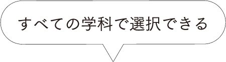
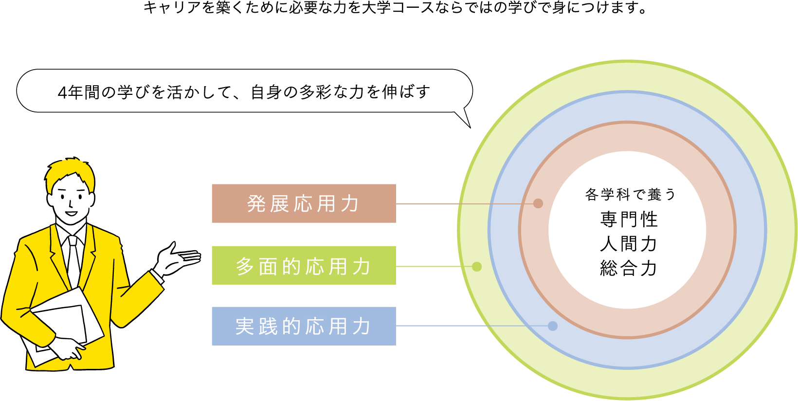
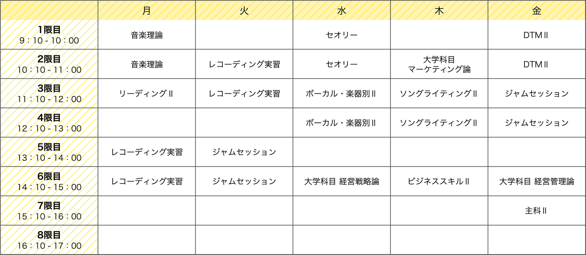

テクノスならではの
大学コース
未来の可能性を
広げる学び
テクノスの「知識・技術の専門性」と大学の「幅広い学問と教養」を学修します。
将来の選択の幅を広げ、キャリアを築くための学びです。
目的にあわせた
様々な学び方
大学コース
大学コースでは、専門学校での学習に加え、大学で学修する深い学びを通して、
視野を広げ、様々な課題を解決するチカラを磨き、変化する未来社会に柔軟に対応できる人材を育成します。
選択する５大学と
各分野
-
経営を学ぶ

産業能率大学
■通信教育課程
情報マネジメント学部
現代マネジメント学科認定単位62/卒業単位124マネージメント(企業・経営・管理・他)が必要とされる場合に適した大学である。
-
法律を学ぶ

中央大学
■法学部通信教育課程
認定単位48/卒業単位124
(2020年度3年次編入より)法律上または行政に関するスキルが必要とされる場合に適した大学である。
-
文学を学ぶ
日本大学
■文理学部文学専攻 通信教育課程
認定単位52/卒業単位124文学に関する興味や研究を必要とする場合に適した大学である。
※東京工学院専門学校は(国文学)
※東京エアトラベル・ホテル専門学校は(英文学) -
小学校の先生になる
姫路大学
■教育学部 こども未来学科
通信教育課程認定単位62/卒業単位124幼稚園教諭1種免許(園長資格)、小学校教諭1種免許、または保健士資格(期限特例)が取得できる大学である。
-
保健体育の先生になる
星槎大学
■共生科学部 共生科学科
通信教育課程認定単位62/卒業単位124保健体育教諭1種免許(中学校・高等学校)が取得できる大学である。
※教職課程授業料として年間：5万円を納入(4年間)
大学コースならではの
知識・技術を深める
＋αな学び

高度な専門性科目獲得で
発展的応用力をUP
小金井市制60周年記念
PR動画作成
1、2年次に習得した知識や技術を活用して、
3、4年次には実際の社会課題に主体性をもって挑戦します。
２学科専攻(Wメジャー制度)で
多面的対応力をUP

留学等多様な体験・
PBL /ボランティアで
実践的総合力UP
オックスフォード大学
オンライン研修
カリキュラム以外にも様々な学修機会を得ることができます。
海外にも人脈を広げ、語学を学び総合力を獲得します。
学士取得者向けの
キャリア支援
-
２年次の
カウンセリング大卒資格を得て就職・キャリア形成をしていく際に踏まえたい進路選択のヒントや就活計画をアドバイスします。
-
大学コース
進路ガイダンス多彩な業界、仕事、場所で活躍する卒業生たちの仕事、働き方、生き方をリレー形式で紹介するトークセッション。
-
大学コース
就活サポート大学コースならではの学びや経験を活かす自己PR、企業選びなどをキャリアセンターと担任でダブルサポート。
大学コースの学修を
サポートする各種支援制度
-
大学の学費を
サポートする
学費支援大学コース選択者は、大学の学費負担をテクノスでサポートします
-
基礎学力を
向上させる
リメディアル教育各科目の学修を進める上で必要な基礎学力、大学のレポートや科目習得試験対策を行い大学の学修をサポートします。
-
計画的に学びを
進めるための
履修サポート大学の卒業に必要となる単位を効率的に取得するための履修サポート。無理の無いスケジュールで学修を進めます。
大学コースを選択した
学生の声
「経営」と「音楽」を学び、
芸能界で活躍する。
大学併修学科／産業能率大学 4年
KTC中央高等学院 小倉キャンパス出身
将来の夢はヴォーカリストとして芸能界で活躍すること。その夢を叶えるために、経歴の中に付加価値を付けて、オーディションで目に留まるようにしたいと思い、「経営」を学ぶことにしました。学生生活の限られた時間を有効活用するため産業能率大学と大学併修学科ミュージック専攻の勉強を両立。さらに芸能活動も同時に行っているため、時間がかなり限られてきます。ですがバランスの良い時間割を先生が一緒に考えてくださって、無理なく学ぶことができています。将来は、経営がわかるミュージシャンとして芸能界で活躍します。
一週間の時間割
「専門卒」と「大卒」を武器に、
大学コースならではの
就職活動に挑戦します。
ホテル科／産業能率大学 3年
私立青陵高等学校(東京都)出身
私はもともと大学進学を検討していましたが、将来はホテル業界に就職したいという強い思いがあったため、夢に直結した勉強ができるエアトラへ進学しました。大学コースを選択したおかげで、私は2年次からの就職活動に加え、もしも納得のいく就職ができなければ、4年次に「大卒」として憧れのホテルへの就職に再チャレンジすることができます。今は大学の勉強と並行して、ホテルでインターンシップを経験しながら夢に向かって頑張っています。
一週間の時間割
関連するその他の記事

学びTopics
一覧へ現在、Topicsはありません。